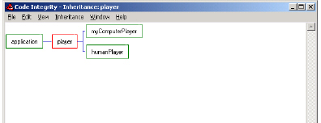
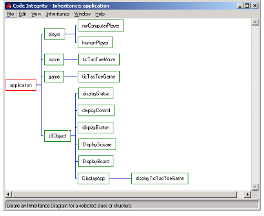
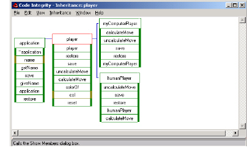

Opening an Inheritance View
1 In the Results window, select the entity you want to view.
2 Do one of the following:
• Select View > Inheritance.
• Click .
An Inheritance window appears.

The following figure shows only the class level. The current (selected) class has a white background; superclasses (on the left) and subclasses (on the right) have green backgrounds.
You can specify a different current class, displaying the inheritance relationships of superclasses and subclasses.

Class members are displayed with color coding to indicate public, private, and protected status. Using the shortcut menu, you can manipulate what the diagram displays. You can also set a number of filters to restrict the number and type of members that appear.
